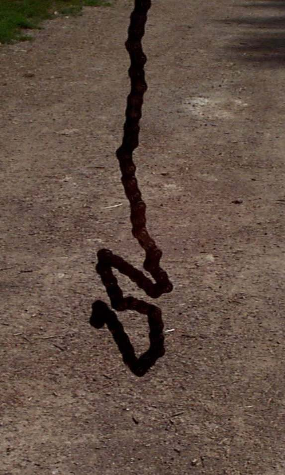
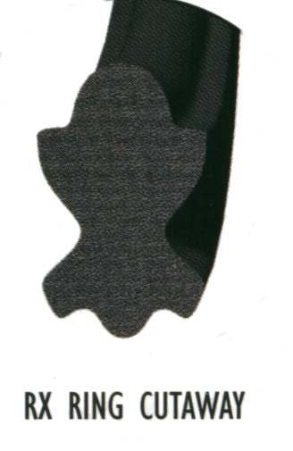
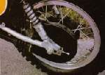
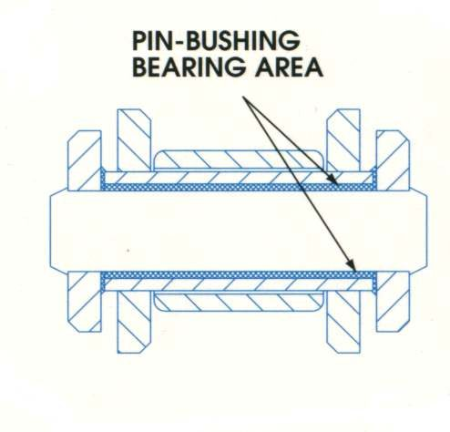
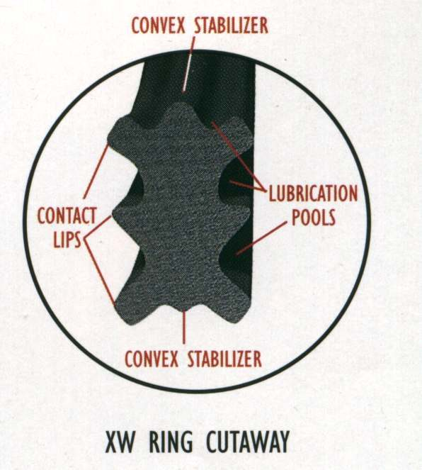

The chain looks dull, dry or orange with rust, squeaks, or has links that stay bent instead of straightening as they leave the sprocket. Chains rust quickly after rain, washing or standing unused. Surface rust that cleans off is a warning; rust inside the rollers and links that will not free up means the chain is worn inside and weakened.
Is it safe to ride?
Ride with care, and only after cleaning and oiling. Do not ride a chain with cracked plates, broken rollers or links that stay stiff after oiling: it can snap.
Quick checks first
- Bike on the stand, engine off: turn the rear wheel by hand and watch every link go round the rear sprocket.
- Look for orange-brown rust coming out from between the side plates.
- Look for cracked side plates or broken rollers.
- Lubricate with chain lube at least at every fuel stop, and more often in rain, mud or dust.
- Spray generously while turning the wheel, aim at the edges of the rollers, then leave the chain to settle for a short time so the carrier liquid dries before riding.
Diagnose it step by step
1Are any side plates cracked, or any rollers broken or missing?
- Yes: do not ride. Replace the chain and sprockets.
- No: go to step 2.
2Clean and oil the chain (Clean and lubricate the chain). Use neutral detergent; the K-Light manual says never steam, petrol or solvent. After oiling, do all links bend freely?
- Yes: the chain was just dry. Set the slack (Check and adjust chain slack) and keep it oiled. Go to step 4.
- No, some links stay stiff: go to step 3.
3Work extra oil into the stiff links and turn the wheel by hand several times. Do they free up?
- Yes: check slack and watch them over the next few days.
- No: the K-Light manual says a chain with stiff links that do not free after cleaning and oiling should be replaced. Check the chain for wear, then Replace the chain and sprockets.
4On a sealed (O-ring) chain, is red-brown rust coming out from between the plates, or are O-rings missing?
- Yes: the seals have failed and the inside is wearing fast. Check the chain for wear and plan replacement.
- No: the chain can be kept.
5Has the bike stood for weeks or months?
- Yes: check the whole bike, not just the chain: Bring a bike back into use after storage.
How to prevent it: oil the chain after rain and washing, and at every service. Do not point a pressure washer at the chain. Store the bike under cover.
Causes, most likely first
| Cause | How to confirm | Fix |
|---|---|---|
| Not oiled after rain or washing | Dull and dry, frees after oiling | Clean and lubricate the chain |
| Washed with solvent or pressure washer | Dry inside, seals damaged | Clean with neutral detergent; check wear |
| Bike stood unused | Rust all over | Bring a bike back into use after storage |
| Internal wear and rust | Stiff links that do not free | Replace the chain and sprockets |